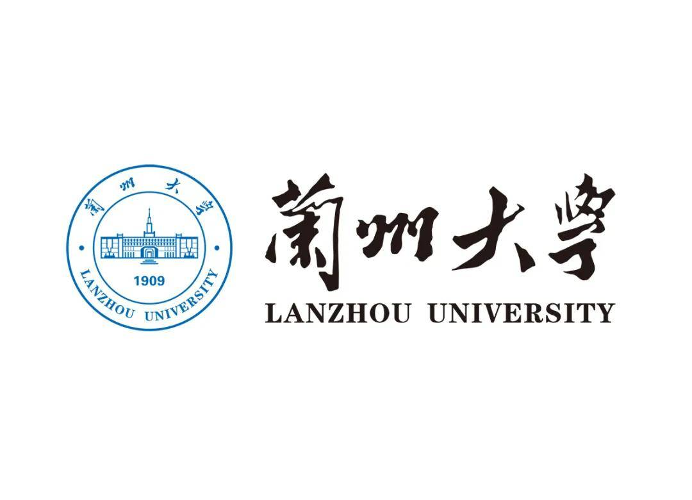

I am a third-year undergraduate student in Computer Science and Technology at Lanzhou University, fortunate to be advised by Associate Prof. Zhongfeng Kang. My research lies at the intersection of trustworthy deep learning and scientific discovery, with a particular interest in embedding physical, topological, and dynamical priors into neural architectures so that they deliver interpretable and reliable solutions on safety-critical tasks.
To date, I have authored or co-authored 8 SCI-indexed manuscripts, including 5 first-author or co-first-author submissions to SCI Q1 journals (4 already published or accepted in Neurocomputing, Expert Systems with Applications, and Knowledge-Based Systems), and 3 invention patents under substantive examination. I have also served as a core member of two National-Level College Student Innovation and Entrepreneurship Programs.
Research Interests: Agentic AI, Explainability Analysis, AI for Science (AI4Science), and 3D Computer Vision.
| 2026.05 | [New] Our paper MSK-Net: Multi-Scale Spatial KANs Enhanced U-Shape Network for Explainable 3D Brain Tumor Segmentation is accepted by Knowledge-Based Systems (SCI Q1 Top, IF 7.6). |
| 2026.04 | Our paper HMP-Net: A Hierarchical Multi-Prior Network for Brain Tumor Segmentation appears in Neurocomputing (Vol. 691). |
| 2026.04 | Our co-authored paper When Comments Aren’t What They Seem appears in Expert Systems with Applications (Vol. 305). |
| 2026.02 | Our paper on KAN-Boosted Chinese Online Abuse Detection (SenTox-GLDA) appears in Expert Systems with Applications. |
| 2026.02 | Our co-authored paper ResKANNet appears in Neurocomputing (Vol. 664). |
Underlined name denotes mine · Bold name denotes corresponding author · * denotes co-first / equal contribution. Full list available on Google Scholar.
Three invention patents in total, all currently under substantive examination at the China National Intellectual Property Administration (CNIPA).
| Under Examination | A Method and System for Context-Aware Multi-Modal Toxicity Detection of Social Media Comments. 一种社交媒体评论的多模态上下文感知毒性检测方法及系统 · 发明专利（实质审查中） |
| Under Examination | A Method for Explainable 3D Multi-Modal Brain Tumor Segmentation Based on Hierarchical Multi-Prior Fusion. 一种基于层次化多先验融合的可解释三维多模态脑肿瘤分割方法 · 发明专利（实质审查中） |
| Under Examination | A Role-Decoupled Multi-Agent Collaboration Method for Vertical-Domain Workflow Applications. 一种面向垂直领域工作流的角色解耦多智能体协同方法 · 发明专利（实质审查中） |
| International | Second Prize, Global Campus Artificial Intelligence Algorithm Elite Competition — Algorithm Innovation Track. 全球校园人工智能算法精英大赛 · 算法创新赛 · 国际二等奖 |
| International | Second Prize, Asia and Pacific Mathematical Contest in Modeling (APMCM). 亚太地区大学生数学建模竞赛 · 国际二等奖 |
| International | Third Prize, Global Campus Artificial Intelligence Algorithm Elite Competition — Algorithm Specialized Track. 全球校园人工智能算法精英大赛 · 算法专项赛 · 国际三等奖 |
| National | Second Prize, National English Competition for College Students (NECCS). 全国大学生英语竞赛 · 国家二等奖 |
| Provincial | First Prize, China International College Students’ Innovation Competition. 中国国际大学生创新大赛 · 省级一等奖 |
| National | National Scholarship. 国家奖学金 |
| University | Outstanding Student Scholarship; Innovation and Entrepreneurship Scholarship; First-Class University Scholarship; Learning Pacesetter; Outstanding Communist Youth League Member. 优秀学生奖学金 · 创新创业奖学金 · 校一等奖学金 · 学习标兵 · 优秀共青团员 |